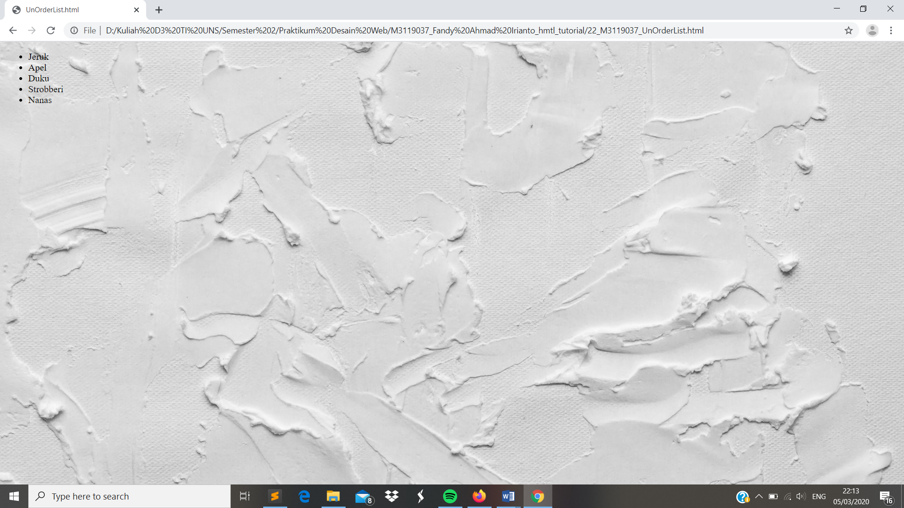

UnOrdered List
//Untuk Ordered List merupakan penempatan item pada html secara berurutan misal huruf ataupun angka. Dan untuk Unordered List merupakan kebalikan dari Ordered List yakni penempatan yang tidak berurutan. Untuk membuat Unorder List dapat menggunakan perintah <ul> kemudian setelah itu <li> diakhiri dengan </li> llalu ditutup dengan <ul>
Codingan
<!DOCTYPE html>
<html>
<head>
<meta charset="UTF-8">
<title> UnOrderList.html </title>
</head>
<body style ="background:url(background.jpg); background-repeat: no-repeat; background-size: cover;">
<ul>
<li> Jeruk </li>
<li> Apel </li>
<li> Duku </li>
<li> Strobberi </li>
<li> Nanas </li>
</ul>
</body>
</html>
Tampilan Hasil Percobaan

Kesimpulan
Pada percobaan Unordered List tag <li> berfungsi untuk membuat list pada halaman web. Sedangkan untuk menentukan unordered list nya adalah dengan tag <ul>.